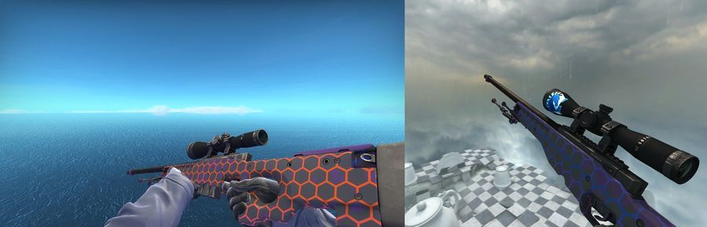
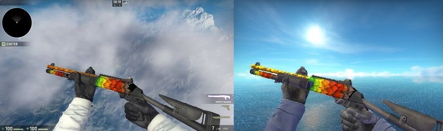
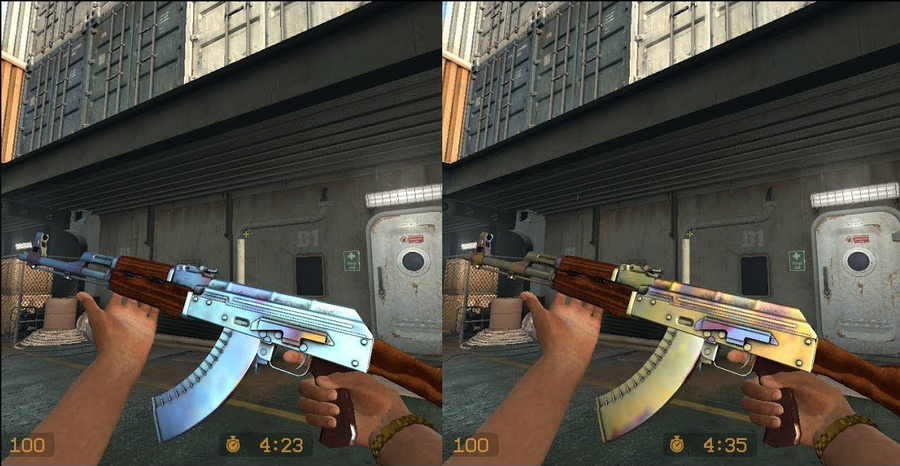

Ma az egyik legnépszerűbb e-sport játék a CS:GO, ám a megjelenéskor közel sem voltak elragadtatva a csapatok. Azóta sokat változott a játék, a Valve rendesen gatyába rázta és azt sem szabad elfelejtenünk, hogy a skinek megjelenésével hirtelen mindenki szeme a CS:GO-ra szegeződött.
Mára már hatalmas értékű inventoryk léteznek, tele szebbnél szebb és borzasztó értékes skinekkel. Van köztük néhány olyan is, amik alapvetően nem feltétlen számítanak ritkaságnak, ám mindegyiknek van egy olyan skin mintázata, amiből már sokkal kevesebb létezik és ezek az elrejtett apróságok a skinek értékeit is nagyon meg tudják dobni.
Alapvetően egyik skin sem túl értékes vagy ritka, de még különösebben szépnek sem mondható. A sandstorm biztosan megfordult már mindenki raktárában, de valószínűleg nem az, amelyik teljesen lila. Ez a variáció már sokkal ritkább, ám nem sokkal értékesebb. Mindenesetre sokkal jobb érzés, ha egy ritka és nem utolsó sorban a megszokottól sokkal szebb skin csücsül a raktárunkban.
AWP - ELECTRIC HIVE (TELJESEN KÉK VAGY NARANCSSÁRGA)
 Nagyon hasonló a helyzet az előző skinhez. A méhkaptárra hajazó minta alapesetben kék, narancssárga és egy kis lila ötvözetében pompázik, ám vannak olyan darabok is, amik teljesen kékek vagy narancssárgák. Alapáron 14 és 20 euró között mozog ez az egyébként meglehetősen mutatós AWP, de ha sikerül kifognod valamelyik ritkább mintát, akkor vastagabban is foghat a toll az árcédulán.XM1014 - SEASONS (KÉK LEVÉL
 Kevés szép XM skin van, de a Seasons a kevesek egyike. Az általában zöld, sárga és piros színben pompázó levelek nagyon jól festenek ezen a shotgunon, főleg ha van köztük egy kék. Egyetlen egy kék levél az összes többi között. Bár a skin árát ez sem igazán dobja meg, az alapvetően 1 euró körül mozgó fegyvert, viszont sokkal hivalkodóbban forgatjuk, ha rajta van az a bizonyos kék levél.AK-47 - CASE HARDENED (BLUE GEM)
 Végül pedig jöjjön az itt szereplő hat skin közül az, amelyikkel ha szerencséd van, akkor egy kisebb vagyont is nyerhetsz. Az AK-47 Case Hardened skinről van szó, ami már önmagában is gyönyörű és értékes. Egy sima gyűri új skin 100 euró körül mozog a Steam Piacon, míg a StatTrakos változata ennek több, mint a négyszerese. Az ár viszont a több ezer dollárt is elérheti, attól függően, hogy mennyi kék van a skineden. A legtöbb kéket tartalmazó mintákat Blue Gem-ként is emlegetik. Meglehetősen ritka és meglehetősen drága.A bluegem skinek mára már akár millió forintokat is érhetnek.